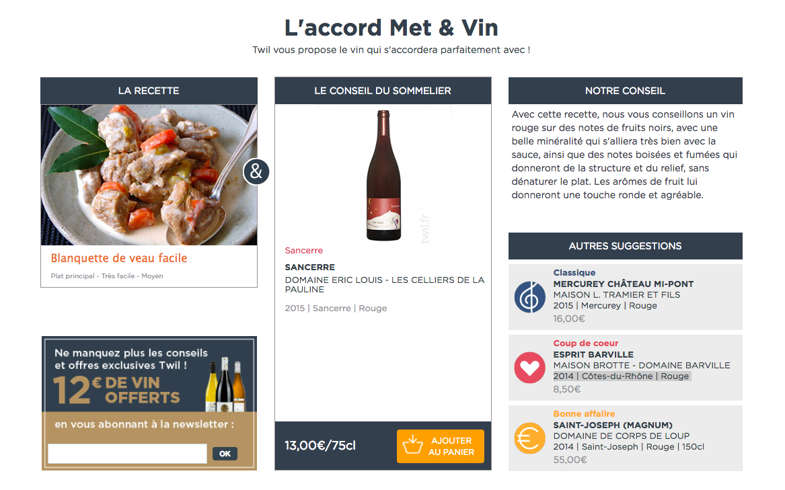

Ce test a pour but d'évaluer vos compétences en intégration et se divise en 4 questions
- Le framework twitter bootstrap est directement inclus dans les sources Twitter Bootstrap
- JQuery est également inclu
- le fichier css dans lequel travailler est déjà créé : css/main.css
- le fichier js dans lequel travailler est déjà créé : js/main.js
La modification du DOM est autorisée et il est vivement recommandé d'ajouter vos propres
classes/identifiants css.
Une fois le test terminé vous pouvez renvoyer le dossier au format .zip à l'adresse christophe@twil.fr
Le logo Twil de cette page n'est pas aligné comme souhaité, on aimerait qu'il soit au centre de la barre de navigation. A vous de faire les modifications nécessaires !
Voici une liste de produits Twil, nous souhaiterions les aligner de la manière suivante:
- 4 produits par colonne pour les devices > 1200px
- 3 produits par colonne pour les devices > 992px
- 2 produits par colonne pour les devices > 768px
Nous aimerions intéger une page HTML/CSS sur un accord met et vin TWIL , voici les instructions :
- Le fichier html dans lequel effectuer l'intégration est : integration.html
- toute modification du DOM est autorisée dans integration.html
- Vous pouvez utiliser n'importe quelle "font" classique , l'évaluation ne se fera pas sur les fonts
- Les images à utiliser se trouvent dans le dossier img/question-3/
- Voici le résultat attendu :

Cette partie s'addresse aux candidats qui ont des notions de javascript/ jQuery :
a - Au clic, Changer la couleur du lien "Je veux devenir bleu" en bleu
b - Changer aussi le texte du lien en "Je veux devenir orange"
c - Au clic, Changer la couleur du lien "Je veux devenir orange" en orange et son texte
Je veux devenir bleu !